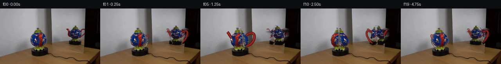

![首帧]()

Round 00
2026-11-05T05:14:54.467235+00:00像素候选变化代码 +258/−0inspection 更新
pixels af968ded922b5bea · code a9efed1106283a47
查看本轮 generate.py 真实 diff
--- previous/generate.py
+++ current/generate.py
@@ -0,0 +1,258 @@
+from pathlib import Path
+import math
+
+import numpy as np
+from PIL import Image, ImageDraw, ImageFilter, ImageFont
+
+from artifact_io import save
+
+
+ROOT = Path(__file__).resolve().parent
+W, H = 256, 144
+
+
+def polygon_mask(points, blur=0.55):
+ """Small feathered mask at the native output resolution."""
+ im = Image.new("L", (W, H), 0)
+ ImageDraw.Draw(im).polygon(points, fill=255)
+ if blur:
+ im = im.filter(ImageFilter.GaussianBlur(blur))
+ return np.asarray(im, dtype=np.uint8)
+
+
+def stroke_mask(paths, widths, blur=0.7):
+ im = Image.new("L", (W, H), 0)
+ draw = ImageDraw.Draw(im)
+ for points, width in zip(paths, widths):
+ draw.line(points, fill=255, width=width, joint="curve")
+ if blur:
+ im = im.filter(ImageFilter.GaussianBlur(blur))
+ return np.asarray(im, dtype=np.uint8)
+
+
+def union(*masks):
+ out = np.zeros((H, W), dtype=np.uint8)
+ for m in masks:
+ out = np.maximum(out, m)
+ return out
+
+
+def clear_by_row_interpolation(image, mask):
+ """Remove masked objects while continuing the local wall/table tones."""
+ out = image.astype(np.float32).copy()
+ hard = mask > 8
+ for y in range(H):
+ xs = np.flatnonzero(hard[y])
+ if not len(xs):
+ continue
+ # Process each contiguous run separately so handle holes remain intact.
+ splits = np.flatnonzero(np.diff(xs) > 1) + 1
+ for run in np.split(xs, splits):
+ x0, x1 = int(run[0]), int(run[-1])
+ left = max(0, x0 - 2)
+ right = min(W - 1, x1 + 2)
+ c0 = image[y, left].astype(np.float32)
+ c1 = image[y, right].astype(np.float32)
+ den = max(1, right - left)
+ for x in range(x0, x1 + 1):
+ u = (x - left) / den
+ out[y, x] = c0 * (1.0 - u) + c1 * u
+ a = (mask.astype(np.float32) / 255.0)[..., None]
+ return np.clip(image * (1.0 - a) + out * a, 0, 255).astype(np.uint8)
+
+
+def paint_scrolled(base, source, mask, turns, direction):
+ """Cyclically move the photographed glaze inside a fixed round silhouette."""
+ texture = source.copy()
+ for y in range(H):
+ core = np.flatnonzero(mask[y] > 180)
+ if len(core) < 3:
+ continue
+ left, right = int(core[0]), int(core[-1])
+ width = right - left + 1
+ strip = source[y, left : right + 1]
+ shift = int(round(direction * turns * width))
+ rolled = np.roll(strip, shift, axis=0)
+ soft = np.flatnonzero(mask[y] > 0)
+ for x in soft:
+ # Extend core colors beneath the feathered edge rather than wrapping
+ # photographed background into the object.
+ texture[y, x] = rolled[min(width - 1, max(0, x - left))]
+ alpha = (mask.astype(np.float32) / 255.0)[..., None]
+ return np.clip(base * (1.0 - alpha) + texture * alpha, 0, 255).astype(np.uint8)
+
+
+def cubic(p0, p1, p2, p3, count=28):
+ pts = []
+ for i in range(count):
… diff truncated; 171 more lines …